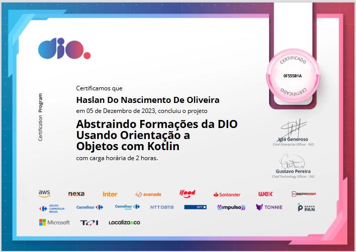
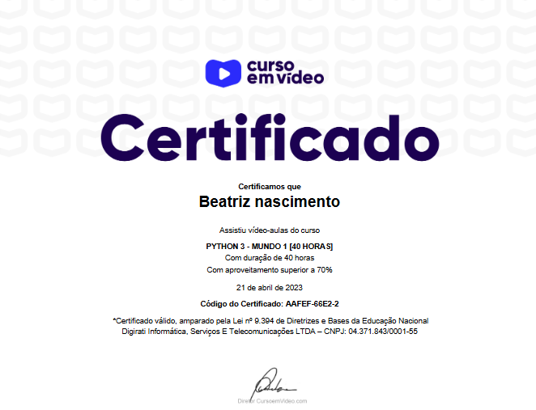
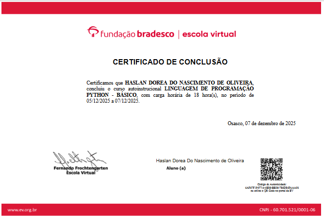
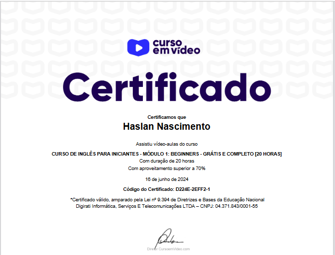
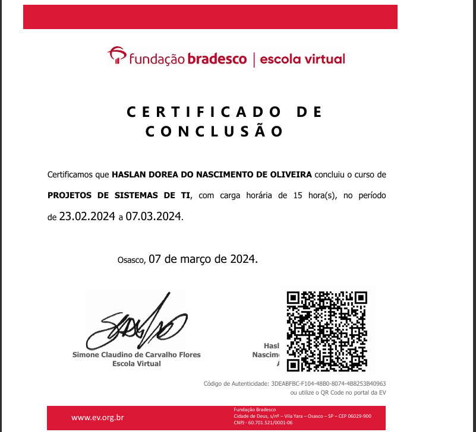
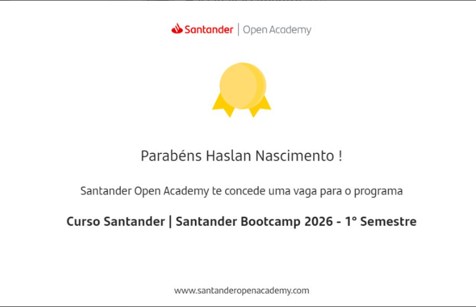
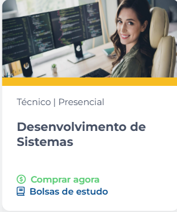

Portfólio da Haslan
Desenvolvedora criando experiências incríveis na Tecnologia
Desenvolvedora criando experiências incríveis na Tecnologia
Desenvolvedora Software
Nascida em 06/03/2002
Desenvolvedora Full Stack em formação, estudante de Análise e Desenvolvimento de Sistemas no Senac. Possuo experiência com Java, SQL, APIs, desenvolvimento web, automação e análise de dados, aplicando esses conhecimentos em projetos práticos e soluções próprias. Mantenho mais de 12 projetos publicados no GitHub, incluindo integrações de APIs, automações e aplicações web. Sou apaixonada por tecnologia, aprendizado contínuo e resolução de problemas, buscando minha primeira oportunidade como Estagiária ou Desenvolvedora Júnior para crescer profissionalmente e gerar impacto através da tecnologia.
HTML
CSS
JavaScript
React
Git
TypeScript
Figma
Node.js






